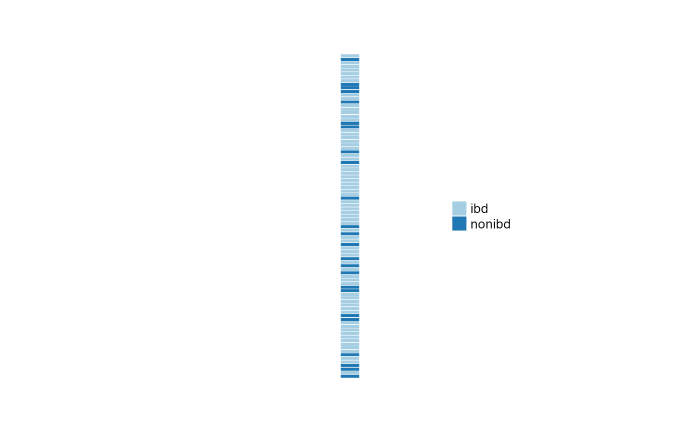
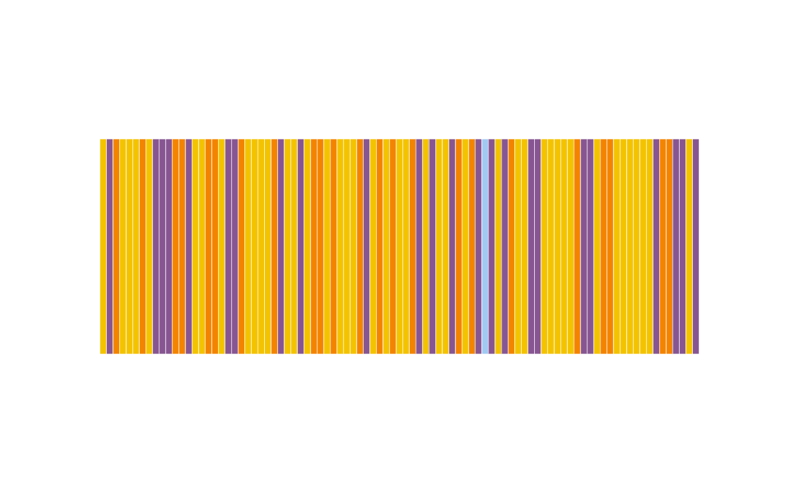

R/heatmaps-sampleAnnotation.R
anno_sample_cat.RdUse this as an argument to sampleAnnotation(), which itself is used by comp_heatmap() as sample_anno argument.
anno_sample_cat(
var,
col = distinct_palette(),
renamer = identity,
size = grid::unit(5, "mm"),
legend = TRUE,
legend_title = "",
box_col = "white",
box_lwd = 0.5,
border_col = NA,
border_lwd = 1,
data = NULL,
samples = NULL,
which = NULL,
...
)name of variable to use for annotation data
colors vector, at least as long as unique(x), optionally named by x levels
function to rename levels of variable var
width or height as a grid unit object
generate legend for this annotation (attached as attribute of heatmap, and not automatically included in plot)
title for legend, if drawn
colour of boxes around individual cells
line width of boxes around individual cells
colour of border around all cells
line width of border around all cells
OPTIONAL phyloseq or psExtra, only set this to override use of same data as in heatmap
OPTIONAL selection vector of sample names, only set this if providing data argument to override default
OPTIONAL indicating if it is a 'column' or a 'row' annotation, only set this if providing data argument to override default
Arguments passed on to anno_cat
xdata vector, treated as categorical
widthgrid unit object or NULL
heightgrid unit object or NULL
vector of values
library("ComplexHeatmap")
data("ibd", package = "microViz")
psq <- ibd
samples <- phyloseq::sample_names(psq)
# makes a function that takes data, taxa and which (at minimum)
fun <- anno_sample_cat(var = "ibd")
# manually specify the prevalence barplot function by giving it data etc.
heatmapAnnoFunction <- fun(data = psq, which = "row", samples = samples)
# draw the barplot without a heatmap, you will never normally do this!
vp <- viewport(width = 0.75, height = 0.75)
grid::grid.newpage()
pushViewport(vp)
draw(heatmapAnnoFunction)
# A legend is attached by default to anno_cat() output, let's plot that.
pushViewport(viewport(x = 0.75))
draw(attr(heatmapAnnoFunction, "Legend"))

# change some options and specify the data up front
grid::grid.newpage()
pushViewport(vp)
anno_sample_cat(
data = psq, var = "DiseaseState", samples = samples, which = "column",
size = grid::unit(5, "cm"), col = distinct_palette(pal = "kelly")
) %>%
draw()
